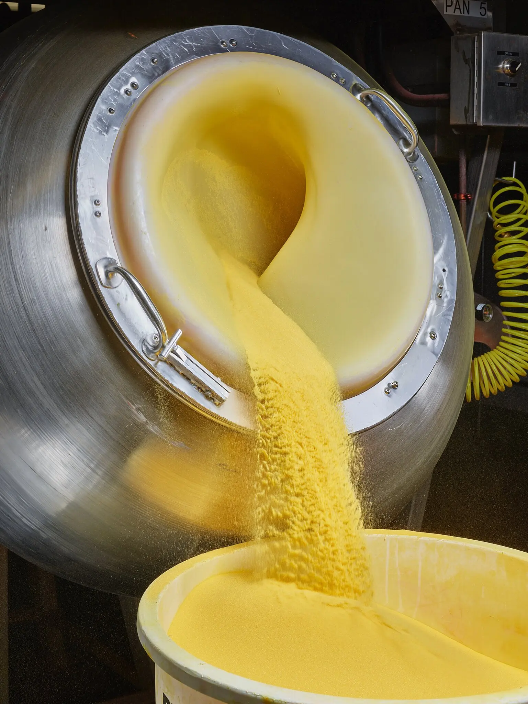
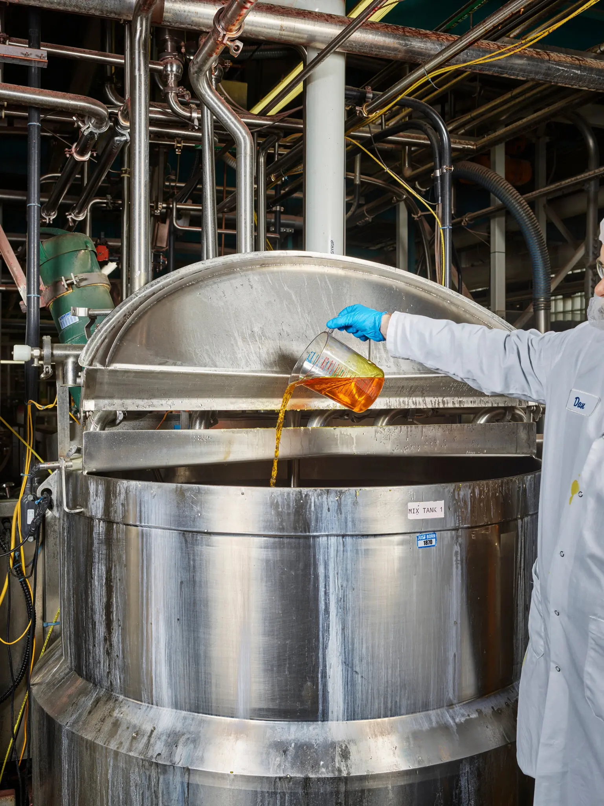

<!DOCTYPE html>
<html>
<head>
	<link rel="stylesheet" type="text/css" href="main.css">
	<meta charset="utf-8">
	<meta name="viewport" content="width=device-width, initial-scale=1">
	<title> A Visit to the Peeps Factory </title>
</head>
<body>
	<!-- You're following instructions on this page [https://github.com/jnl221/HTML_assignment] to add content in here. -->
</body>
</html>
<h3>HTML/CSS Assignment #1 <br> Source: <a href="https://www.nytimes.com/2023/04/06/magazine/peeps-factory.html" target="_blank">Link to story here!</a></h3>

<div>  
</div>

	#caption
	<p> <i> The New York Times, Christopher Payne </i> </p>

<h1> A Visit to the Peeps Factory </h1>

<h2> With Easter approaching, The New York Times for Kids takes a trip to a world of marshmallow magic. </h2>

<p> <strong> By Kevin Dupzyk, Photographs by Christopher Payne, April 6, 2023. </strong> </p>

<p> Visiting the factory where Peeps are made, in Bethlehem, Pa., is a true Willy Wonka experience. The building is crammed with pipes full of marshmallow and hoses full of sugar. Spray guns spray food coloring and flavors. Even the “whoops” moments that occasionally happen when the candymakers are testing new products seem like fun: “We have an engineer who is known for pushing buttons he’s not supposed to,” says Daniel Moyer, a food scientist at Just Born Quality Confections, the company that makes Peeps. “Sometimes he ends up completely covered in marshmallow.” <br>

</p>

It wasn’t always so fun. Back in the early 1950s, some employees at the Peeps factory were ending every shift with limp, sore arms. They had spent hours hand-squeezing marshmallow into the shape of tiny chicks. Back then, each individual Peep took 27 hours to make from start to finish. <br>

</p>

That all changed in 1954. That’s when Bob Born, who was a member of the family that founded the company, and a colleague invented a machine that could make Peeps automatically. Now it takes only six minutes from the moment marshmallow meets the conveyor belt to the final boxing. <br>

</p>

Bob Born died in January at age 98. But his legacy lives on at that same factory, which now houses four production belts. They pump out 5.5 million Peeps on an average day, in all kinds of shapes (like bunnies, or skulls in the fall), flavors (sour watermelon, anyone?) and colors. Of course, the classic Peep, especially during the busy Easter season, is still that fluffy little yellow chick. Here’s how they’re made. <br>

</p>

The bright yellow (or pink, or blue) sugar that coats Peeps chicks starts as the same white stuff you have at home — except the Peeps factory pours it out of 100-pound bags. Four bags at a time go into giant rotating drums that tumble the sugar the way a dryer tumbles clothes. Then a worker pours food coloring into a funnel that feeds a spray gun, which shoots it into the drum, where the tumbling mixes and dries it. <br>

</p>

The sugar-dyeing process takes about 18 minutes. Then the sugar is emptied into giant bins and brought over to the beginning of a long conveyor belt, where a vacuum sucks up the sugar and spreads it out on the belt. <br>

</p>

If you’ve ever bitten into a Peep, you know that underneath its brightly colored sugar skin are insides made of marshmallow. To create all that fluff, 1,400 pounds of water, sugar and corn syrup are first heated into a hot, sticky syrup that candymakers call a bob. Gelatin is added to help the bob stiffen up so that it can eventually hold its shape, along with vanilla and other flavors. The process is overseen by marshmallow cooks, who hold one of the most specialized jobs at the factory. It’s their responsibility to make sure the marshmallow is perfectly fluffy — if it isn’t the right density, it could throw everything off. <br>

</p>

How exactly does the marshmallow mixture transform from a blob of goo to a brood of beaky little chicks? Well, that’s a secret that Just Born keeps under wraps. But here’s the basic idea: The liquid marshmallow is pumped through an aerator — a wide tube full of spinning wires that whip air into it, making it fluffy — and into a machine called a depositor. Then the depositor squeezes the marshmallow onto the sugarcoated conveyor belt. <br>

</p>

<div class="otherimg"/div>

<div>  </div>

	<p> <i> The New York Times, Christopher Payne </i> </p>

<p> The Peeps are made in sets of five connected chicks, like little troops marching down the conveyor belt. It happens quickly, with new sets of chicks born every few seconds.

</p>

<p>As the Peeps proceed along the conveyor belt, they enter what the company calls a sugar shower— although it’s actually more like a sugar dust storm. The belt carries the chicks under a set of nozzles that bombard them with compressed air. That kicks up the layer of sugar on the belt into a frenzy that coats every surface of the (still warm and gooey) Peeps.

</p>

<p>Now the Peeps are recognizable as yellow chicks, but they’re missing one important thing: eyes! The conveyor belt carries them toward machines that hold melted, edible carnauba wax and are equipped with sensors that can tell the chicks are approaching. As each chick passes under, the machine’s nozzles make a PFFT! sound, like a BB gun, and shoot two wax eyes onto each chick. Usually, they land in the right place. But if the timing is off, employees adjust the machine and remove any messed-up Peeps. (They don’t go to waste. They’re melted down to use again — after all the floating eyes have been strained out.)

</p>

<p> The Peeps are now complete, but they’re still too warm and soft to be packaged. (But they’re perfect for eating, according to the employees who get to taste-test them at this point.) So the conveyor belt takes a 161-foot route to the packaging area to give them a chance to cool. At some point after the sugar shower (it varies on the different production lines), the chicks also pass over wire mesh that allows extra sugar to fall through, leaving them squeaky clean and ready for packing.

</p>

<p>As the Peeps make their way to the packing area, they pass over trap doors that can be triggered if a worker notices something wrong with the batch. Peeps that fall through the trap door are carried into a bucket that will ultimately be dumped back into the mixing kettle.

</p>

<p> If they’re good to go, the rows of chicks continue on to be packed into trays. There are a couple of different ways this happens: On one production line, people put the Peeps into trays by hand. On another, robots with rubber fingers (soft enough not to smush the delicate marshmallow) do the job. And on yet another, the conveyor belt drops them neatly into place.

</p>

<p> The chick-filled trays pass through a machine called a flow wrapper. It’s kind of like a giant tape gun, but instead of tape, it’s strung with plastic packaging.As the trays pass through, the material wraps around them and a heated metal jaw seals them shut.

</p>

<p> After the trays are wrapped up, a spiral belt carries them toward a final quality check, where they pass through a metal detector that’s also a scale, to make sure nothing from the factory equipment has somehow gotten inside. Then the finished packages of chicks are boxed up so they can begin their next journey: into your stomach.

</p>
